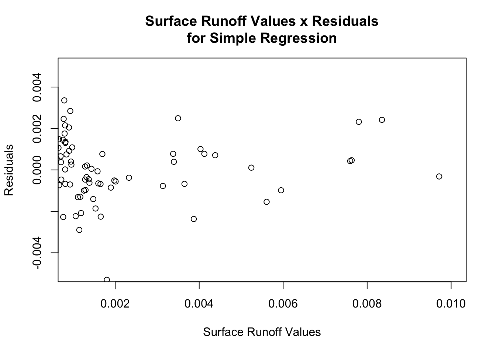
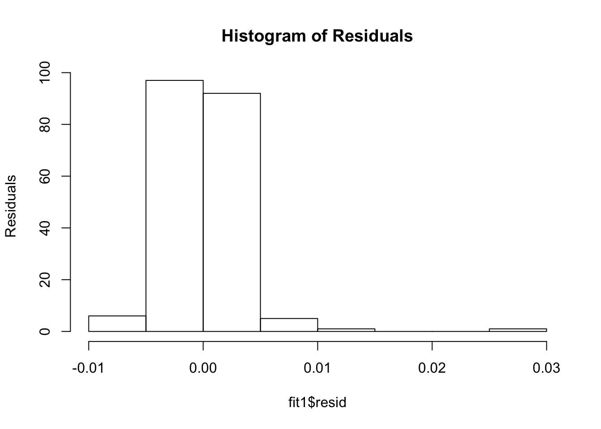

library(tidyverse)
library(ggplot2)
library(plotly)
main_data_file = read_csv('data_monthly.csv', col_names=TRUE)
#Remove the columns that are not required.
subset_data = select(main_data_file,-c(2,11,24,7,9,29,28))
names(subset_data)<-str_replace_all(names(subset_data), c(" " = "." , "," = "" ))
fit1<- lm(Surface.Runoff.Amount~Canopy.Water.Amount+Downward.Heat.Flux.In.Soil+Evaporation.Flux.From.Canopy+Evaporation.Flux.From.Soil+Precipitation.Flux+Root.Zone.Soil.Moisture+Soil.Temperature+Specific.Humidity+Subsurface.Runoff.Amount+Surface.Air.Pressure+Surface.Albedo+Surface.Downwelling.Longwave.Flux.In.Air+Surface.Downwelling.Shortwave.Flux.In.Air+Surface.Net.Downward.Longwave.Flux+Surface.Net.Downward.Shortwave.Flux+Surface.Runoff.Amount+Surface.Snow.Amount+Surface.Snow.Melt.Amount+Surface.Temperature+Surface.Upward.Latent.Heat.Flux+Surface.Upward.Sensible.Heat.Flux+Wind.Speed, data = subset_data
)
summary(fit1)##
## Call:
## lm(formula = Surface.Runoff.Amount ~ Canopy.Water.Amount + Downward.Heat.Flux.In.Soil +
## Evaporation.Flux.From.Canopy + Evaporation.Flux.From.Soil +
## Precipitation.Flux + Root.Zone.Soil.Moisture + Soil.Temperature +
## Specific.Humidity + Subsurface.Runoff.Amount + Surface.Air.Pressure +
## Surface.Albedo + Surface.Downwelling.Longwave.Flux.In.Air +
## Surface.Downwelling.Shortwave.Flux.In.Air + Surface.Net.Downward.Longwave.Flux +
## Surface.Net.Downward.Shortwave.Flux + Surface.Runoff.Amount +
## Surface.Snow.Amount + Surface.Snow.Melt.Amount + Surface.Temperature +
## Surface.Upward.Latent.Heat.Flux + Surface.Upward.Sensible.Heat.Flux +
## Wind.Speed, data = subset_data)
##
## Residuals:
## Min 1Q Median 3Q Max
## -0.0066020 -0.0009691 -0.0000607 0.0007764 0.0255575
##
## Coefficients:
## Estimate Std. Error t value
## (Intercept) 8.966e-02 1.315e-01 0.682
## Canopy.Water.Amount -1.465e-03 3.981e-03 -0.368
## Downward.Heat.Flux.In.Soil -8.180e-04 1.036e-03 -0.790
## Evaporation.Flux.From.Canopy -1.016e-04 1.035e-04 -0.982
## Evaporation.Flux.From.Soil -3.194e-04 7.499e-05 -4.259
## Precipitation.Flux 1.810e+02 6.029e+01 3.002
## Root.Zone.Soil.Moisture 5.982e-05 8.488e-06 7.048
## Soil.Temperature 2.522e-03 7.419e-04 3.399
## Specific.Humidity -6.628e-01 4.682e-01 -1.416
## Subsurface.Runoff.Amount 8.595e-03 5.575e-02 0.154
## Surface.Air.Pressure -9.417e-07 5.206e-07 -1.809
## Surface.Albedo -2.329e-04 7.629e-05 -3.053
## Surface.Downwelling.Longwave.Flux.In.Air 9.683e-05 1.124e-04 0.862
## Surface.Downwelling.Shortwave.Flux.In.Air 3.705e-04 6.198e-05 5.979
## Surface.Net.Downward.Longwave.Flux 8.953e-04 9.859e-04 0.908
## Surface.Net.Downward.Shortwave.Flux 5.491e-04 1.053e-03 0.522
## Surface.Snow.Amount -3.655e-04 7.282e-05 -5.020
## Surface.Snow.Melt.Amount 6.197e-03 3.121e-02 0.199
## Surface.Temperature -2.673e-03 1.027e-03 -2.603
## Surface.Upward.Latent.Heat.Flux -1.010e-03 1.035e-03 -0.975
## Surface.Upward.Sensible.Heat.Flux -9.963e-04 1.034e-03 -0.964
## Wind.Speed 2.655e-04 3.926e-04 0.676
## Pr(>|t|)
## (Intercept) 0.496273
## Canopy.Water.Amount 0.713220
## Downward.Heat.Flux.In.Soil 0.430743
## Evaporation.Flux.From.Canopy 0.327355
## Evaporation.Flux.From.Soil 3.30e-05 ***
## Precipitation.Flux 0.003066 **
## Root.Zone.Soil.Moisture 3.75e-11 ***
## Soil.Temperature 0.000833 ***
## Specific.Humidity 0.158596
## Subsurface.Runoff.Amount 0.877636
## Surface.Air.Pressure 0.072144 .
## Surface.Albedo 0.002613 **
## Surface.Downwelling.Longwave.Flux.In.Air 0.390040
## Surface.Downwelling.Shortwave.Flux.In.Air 1.18e-08 ***
## Surface.Net.Downward.Longwave.Flux 0.365024
## Surface.Net.Downward.Shortwave.Flux 0.602491
## Surface.Snow.Amount 1.24e-06 ***
## Surface.Snow.Melt.Amount 0.842802
## Surface.Temperature 0.010011 *
## Surface.Upward.Latent.Heat.Flux 0.330698
## Surface.Upward.Sensible.Heat.Flux 0.336329
## Wind.Speed 0.499672
## ---
## Signif. codes: 0 '***' 0.001 '**' 0.01 '*' 0.05 '.' 0.1 ' ' 1
##
## Residual standard error: 0.003023 on 180 degrees of freedom
## Multiple R-squared: 0.6742, Adjusted R-squared: 0.6362
## F-statistic: 17.74 on 21 and 180 DF, p-value: < 2.2e-16#Spend x Residuals Plot
plot(fit1$resid~subset_data$Surface.Runoff.Amount[order(subset_data$Surface.Runoff.Amount)],
main="Surface Runoff Values x Residuals\nfor Simple Regression",
xlab="Surface Runoff Values", ylab="Residuals", xlim=c(0.001,0.01), ylim=c(-0.005,0.005))
#Histogram of Residuals
hist(fit1$resid, main="Histogram of Residuals",
ylab="Residuals")